Anoé.
This is an attempt to document the script, vocabulary and grammar of Anoé, a little-known constructed language. To view the text in the Anoé script, one must install the AnoeyFuturamerlincom font. An example of a document translated into Anoé can be found here.
Grammar:
All sentences are of the form (Subject)(Object)(Verb).
( and ) should be used to group modifiers to avoid ambiguity, as in mathematics.
An example sentence. ,vené-en-zéal tlaém-én-lotez ló. Transliteration: Vené-en-zéal tlaém-én-lotez ló. Meaning: Writing a letter is a form of interaction. Literal translation: Letter-to-write (a-type-of)-to-interact is.
Pronunciation:
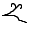 is pronounced as l/y before a vowel and as l before a consonant or the end of the sentence.
Words beginning with vowels (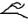,  ,
,  ,
,  ,
,  ,
,  ,
,  ) should not be pronounced with a glottal stroke.
) should not be pronounced with a glottal stroke.
Consonant  is transliterated as "b/v", indicating pronunciation of
is transliterated as "b/v", indicating pronunciation of  as a blend of b and v (as v in Latin American Spanish).
as a blend of b and v (as v in Latin American Spanish).
Consonant is sometimes transliterated as "l/y", indicating pronunciation of as a blend of l and y.
Symbols:
Note that they are shown in the enclosed form. See the section "Symbol Forms" below for other forms.
| Symbol | Transliteration |
|---|---|
| a | a |
| o | o |
| l | l |
| n | n |
| m | m |
| t | t |
| ( | æ |
| é | é |
| z | z |
| e | e |
| i | i |
| ó | ó |
| f | f |
| v | v |
| s | s |
| k | k (only used in profanity) |
| , | beginning of sentence |
| . | ending of sentence |
| ( | opening parenthesis |
| ) | closing parenthesis |
| / | therefore |
| \ | because |
| # | in that |
| — | space |
Vocabulary:
| Word | Transliteration | Definition | Part of speech |
| énelaté- | énelaté- | -ality | prefix |
| iléev- | iléev- | -fully | prefix |
| éelz- | éelz- | -liness | prefix |
| aél- | aél- | -ly | prefix |
| zzénó- | zzénó- | -nary | prefix |
| k | k | (generic profane exclamation) | interjection |
| vkozé | vkozé | (generic profane exclamation) | interjection |
| k- | k- | (generic profane prefix, for attaching to a verb that caused one disgust) | prefix |
| kva- | kva- | (generic profane prefix, for attaching to a verb that caused one disgust) | prefix |
| sén- | sén- | (one who understands the attached word) | prefix |
| am- | am- | (past tense) | prefix |
| on- | on- | (plural) | prefix |
| af- | af- | (possessive) | prefix |
| aet- | aet- | (present tense) | prefix |
| et- | et- | (present tense) | prefix |
| tan- | tan- | (related to) | prefix |
| -ézl- | -ézl- | (sthg *-ed) | prefix |
| mel | mel | (subject) | noun |
| én- | én- | (the infinitive; “*ing” as noun) | prefix |
| anoé | anoé | (this conlang) | noun |
| tén | tén | (used in titles) | word |
| tlaém- | tlaém- | a type of | adjective |
| zun- | zun- | above | preposition |
| asém | asém | achieve | verb |
| aédul | aédul | act | noun |
| aémel | aémel | act | verb |
| ézuan | ézuan | aid | verb |
| ulzzalé | ulzzalé | anarchy | noun |
| tlé | tlé | and | conjunction |
| tléé | tléé | and | conjunction |
| tevél- | tevél- | angry | adjective |
| laéen | laéen | another person | noun |
| aén- | aén- | any | prefix |
| zsal- | zsal- | any | prefix |
| tvaen- | tvaen- | are *ed | prefix |
| élu- | élu- | as | prefix |
| éatl- | éatl- | as object | prefix |
| -tón- | -tón- | at for date | conjunction |
| óeénlé | óeénlé | atom | noun |
| uzéat | uzéat | attempt | verb |
| -tlén- | -tlén- | because, on, caused by | conjunction |
| zél- | zél- | below | preposition |
| -séaz- | -séaz- | best represented by | conjunction |
| aaén- | aaén- | black | adjective |
| sézi | sézi | break | verb |
| -ttéel- | -ttéel- | by | conjunction |
| ult- | ult- | can be | helper verb |
| aaltev | aaltev | cause | verb |
| tlénef | tlénef | cause to be | verb |
| tlénef- | tlénef- | cause to be | prefix |
| élate- | élate- | characterized by | prefix |
| aélde | aélde | commit | verb |
| tél | tél | community | noun |
| tséaln | tséaln | compassion | noun |
| fséez- | fséez- | complete | adjective |
| tlénóle | tlénóle | composite (in mathematics, in reference to functions) | verb |
| tféloz | tféloz | compound object, unit | noun |
| lvónu | lvónu | computer | noun |
| fsaén | fsaén | concept | noun |
| téal | téal | connect | verb |
| fsavé- | fsavé- | conscious | adjective |
| fsail | fsail | consider | verb |
| tfél- | tfél- | consider the action specifically as used in a sentence bracketed | prefix |
| tlfael | tlfael | considering sthg, like viewing/considering sthg as sthg else | verb |
| tlaéniél | tlaéniél | continuüm | noun |
| aséu | aséu | contribute to, help | verb |
| ézal- | ézal- | converts a verb to a noun | prefix |
| an- | an- | created by | prefix |
| ulén- | ulén- | current | adjective |
| -élt- | -élt- | day | conjunction |
| maénnél | maénnél | define | verb |
| faéeln | faéeln | desire | noun |
| tvélmet | tvélmet | develop, create | verb |
| tvaólen | tvaólen | distortion | verb |
| aénu- | aénu- | does sthg | prefix |
| tvéiez | tvéiez | earth, world | noun |
| fléln- | fléln- | effective | prefix |
| -nét | -nét | end date region | suffix |
| nélaat | nélaat | entity | noun |
| tel | tel | everything living | noun |
| fsaul | fsaul | evidence | noun |
| iétl- | iétl- | exclusively,only | prefix |
| tez | tez | five | number |
| éan- | éan- | for | prefix |
| flsaan | flsaan | form, create | verb |
| iz | iz | four | number |
| aólnéz | aólnéz | fuel | verb |
| tvenlu | tvenlu | function (in mathematics) | noun |
| tlaan | tlaan | God | noun |
| zzalé | zzalé | government | noun |
| aentval | aentval | gravity | noun |
| tém | tém | have | verb |
| téau- | téau- | healthy | adjective |
| tvaéé | tvaéé | hole | noun |
| éltani | éltani | holiday | noun |
| ftéen- | ftéen- | how-to | prefix |
| fnam- | fnam- | how-to-be | prefix |
| tvan | tvan | however | conjunction |
| elaé | elaé | humanity | noun |
| sézln | sézln | hurt | verb |
| é | é | I | pronoun |
| temév | temév | ideal | noun |
| kul | kul | idiot (vulgar) | noun |
| -él- | -él- | in | preposition |
| él- | él- | in | prefix |
| -tvélemin- | -tvélemin- | in the name of | prefix |
| éelnat- | éelnat- | insatiable | adjective |
| laéln | laéln | institution | noun |
| fsavel | fsavel | intent | noun |
| tmélén | tmélén | intention | noun |
| lotez | lotez | interact | verb |
| ulnaénol- | ulnaénol- | irrelevent | adjective |
| ló | ló | is | verb |
| luén- | luén- | is -ed | prefix |
| -zaléln- | -zaléln- | is filled by | verb |
| ta- | ta- | is sthg | prefix |
| éz | éz | it | pronoun |
| tfanil | tfanil | It is the case that | noun |
| taéez | taéez | it occurs | verb; no do |
| fsót | fsót | know | verb |
| itu | itu | lamp | noun |
| vené | vené | letter | noun |
| tfaém | tfaém | list | noun |
| san | san | love (friendship) | verb |
| tléoln | tléoln | love (friendship) | verb |
| zan | zan | love (romance) | verb |
| aélnulée | aélnulée | maintain | verb |
| anéan- | anéan- | many | adjective |
| aénló- | aénló- | massive | adjective |
| éfeln | éfeln | method, way | noun |
| faéez- | faéez- | modern world | adjective |
| -tan- | -tan- | month | conjunction |
| at- | at- | negative | prefix |
| aééen | aééen | neglect | verb |
| atenól- | atenól- | never | prefix |
| nó | nó | next bit | number |
| féltil- | féltil- | next, following | prefix |
| ul- | ul- | not | prefix |
| fséln | fséln | notice | verb |
| et- | et- | number | prefix |
| tlón | tlón | object | noun |
| -méaz- | -méaz- | object is | conjunction |
| tsao- | tsao- | obsolete | adjective |
| -en- | -en- | of | conjunction |
| -uéln- | -uéln- | often | conjunction |
| és | és | one | number |
| ue | ue | one | pronoun |
| -tsen- | -tsen- | only | conjunction |
| falianu | falianu | opinion | noun |
| tla | tla | or | conjunction |
| tfón | tfón | other animal | pronoun |
| talam- | talam- | part of | prefix |
| lutél | lutél | partnership | noun |
| nael | nael | peace | noun |
| ve | ve | peace (alt) | noun |
| ttéan | ttéan | person | noun |
| zéat | zéat | philosophy | noun |
| tnalée- | tnalée- | positive, benificial | adjective |
| fséaln- | fséaln- | present | adjective |
| séaal | séaal | promote | verb |
| ttaél- | ttaél- | recent | adjective |
| ttéen | ttéen | religion | noun |
| saen | saen | saint | derived noun |
| tfaéol | tfaéol | search | noun |
| ééln- | ééln- | should | prefix |
| sééld | sééld | sin | noun |
| tlz- | tlz- | single | adjective |
| itfaén | itfaén | space | noun |
| itfaén-atel-ésélit | itfaén-atel-ésélit | spacetime | noun |
| élanzat | élanzat | species | noun |
| tvaen | tvaen | spirit | noun |
| némaé | némaé | star | noun |
| tzéan | tzéan | state | noun |
| tal- | tal- | stupid | adjective |
| étz- | étz- | such as | prefix |
| éet | éet | ten | number |
| ttaélten | ttaélten | text | noun |
| vzs | vzs | thank | verb |
| al- | al- | that | article |
| ól- | ól- | the | article |
| -éetl- | -éetl- | the — of which | conjunction |
| faén- | faén- | the *ness of | prefix |
| téen- | téen- | the unfinished action — as in * are *ed by * | prefix |
| aér- | aér- | them | prefix |
| atéi | atéi | there | pronoun |
| tvul- | tvul- | they-do | prefix |
| ezól | ezól | this | pronoun |
| ttaln | ttaln | this is | conjunction |
| am | am | three | number |
| ésélit | ésélit | time | noun |
| ón | ón | two | number |
| aal- | aal- | very | adverb |
| fsén | fsén | view | noun |
| iéfa | iéfa | wave | noun |
| taalé | taalé | way of life, lifestyle | noun |
| tena- | tena- | what | prefix |
| ftaen | ftaen | when | conjunction |
| -tssael- | -tssael- | which | conjunction |
| -féntal- | -féntal- | which is | conjunction |
| -tfalnel- | -tfalnel- | which is most | prefix |
| tézef | tézef | while (as only...while) | conjunction |
| tson- | tson- | will have | prefix |
| tlóel | tlóel | wisdom | noun |
| -atel- | -atel- | with | preposition |
| -éaméer- | -éaméer- | with the intent | prefix |
| zéal | zéal | write | verb |
| nól | nól | write (alt) | verb |
| ve | ve | you | pronoun |
| a | a | you (alt) | pronoun |
| ul | ul | zero | number |
Symbol Forms:
Most symbols have distinct enclosed, initial, final, and isolated forms: enclosed for a symbol with a symbol at both sides, initial for the first symbol in a word that is outside of a sentence, final for the last symbol in a word that is outside of a sentence, and isolated for referencing a single symbol or a one-symbol word. (A notable exception to that rule is  .) Note that and have alternative final forms. A table of all forms follows.
.) Note that and have alternative final forms. A table of all forms follows.
| Enclosed Form | Initial Form | Final Form | Isolated Form |
|---|---|---|---|
| 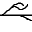 | |||
| 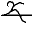 | |||
| or |
|||
| 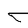 | |||
| 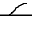 | |||
| 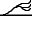 | 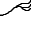 | ||
| 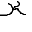 | |||
| 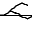 | |||
| 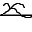 | |||
| 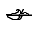 | 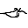 | ||
| 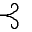 | 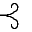 | ||
| ( |
----- | ----- | ----- |
Syllabic writing:
Anoé can be written in a syllabic form, as well as the script form. Each syllable would occupy a two-by-two grid, with each square holding up to four letters. No more than four letters can occupy one syllable. Syllabic writing does not use a stemline. Each letter is denoted by its order within the syllable: the first drawn receives a small hook curving upward, the second a small hook curving downward, the third a small loop curving upward, and the fourth a small loop curving downward. How many letters are drawn in each corner denotes multiple letters for one sound within the syllable. There are more than seventeen million possible syllable combinations, so encoding them on a per-syllable basis is not practical; a combining method would be much more satisfactory; although input issues still exist.
Typography:
Glyph metrics:
The stemline (the central line) should be at the baseline of the glyph. The portions of each letter above the stemline should occupy the height of an ascender in Latin text, and the portions below the same.
Ligation:
Letters that have portions that are following the curves of the previous letter should ligate. (An example of this is él, where the lower right line of the é glyph would, optimally, form a single line with the upper left portion of the l glyph.) However, ligation is not mandatory. The word tlaan (meaning God) receives a special ligature,  , with identical metrics to other letters.
, with identical metrics to other letters.
Glyph design:
Glyphs can be of either of two types: stemless or stemmed. The recommended form is usually stemmed; however, in some uses (like headlines), a stemless glyph is recommended. The space glyph should either be a line or a blank glyph, depending on the style of the typeface.